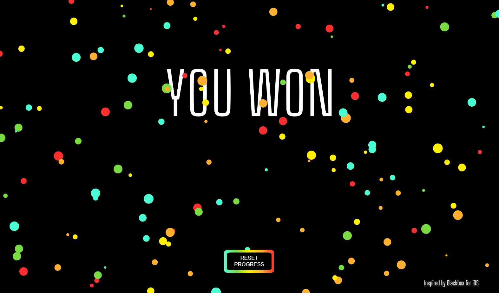

For my capstone project at NYU, I built a delay plug-in using the JUCE Framework (yes, D'Lay is a genius play on my last name). The goal was to create an intuitive user interface and include an educational aspect by adding a visualizer component. This plug-in features regular, LFO-modulated, and amplitude-modulated delay effects. You can watch more demo videos here and here!
D'Lay Plug-In
Sound Garden
The Sound Garden is an online multiplayer VR experience. Players can move around the garden and plant flowers, each of which loops an audio sample. You are able to see and hear flowers planted by all the players in real time, and everything is panned in 3D to enhance the experience. This was a collaboration between a classmate and myself for a final project. Explore the sound garden here!
Sound Design
These two commercials were completely sound designed and mixed by me. (These are NOT the official versions, they are just reproductions). While interning for the sound and creative technology company One Thousand Birds, I re-did all of the sound design from scratch while receiving feedback from experienced sound designers.
ORB Sleep Complex
Pepsi World Cup 2018
Quarantine Quiz Website
I designed and coded this website for my friend so that she would be able to present her final psychology project to professors at NYU. It implements responsive design and modern HTML, CSS, and Javascript practices. If you're looking to fall in love, click here to take the quiz!
BlackBox
This project is a web-based game built using p5.js where the player passes each level by completing a task that forces he or she to think "outside the box." It was a collaboration between a classmate and me for a midterm project. Click here to play the game for yourself!

Theatre in the Sound
Theatre in the Sound is a group at NYU that performs and produces radio dramas. I've done some of the post production on various episodes including Take the Lyft Code Home, +1, and others. This is a short clip from an episode called Bart and Rebecca, and was entirely dialogue edited, sound designed, and mixed by me!
MIDI Drum Pad with Visualizer
This was my final project for my digital electronics class. It's an Arduino MIDI controller with 4 touch sensitive pads that each trigger a different sound (in this case, drum samples). The pads also control a program built using Processing, which serves as the visual component. You can see the full project report here.